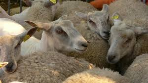
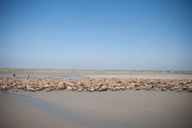

Depuis le xve siècle, la présence de moutons en Baie de Somme est attestée. À cette époque et jusqu'à la Révolution française, les pratiques communautaires de pâturage utilisaient les mollières (partie végétale de la Baie recouverte par la mer lors des grandes marées) pour y faire paître les animaux du village sous la conduite d'un berger. Aujourd'hui, le berger, gardien des troupeaux de plusieurs éleveurs, mène plus de 5 000 brebis et agneaux à l'aide de chiens au gré des chenaux et des marées sur les prés-salés de mars (après les agnelages) à novembre. Il existe quatre grands troupeaux de brebis en Baie de Somme. Il est parfois possible de les observer au milieu de la Baie à marré basse.

